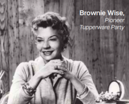

Adalah Earl Silas Tupper, pebisnis kelahiran Amerika Selatan tahun 1907, memprakarsai lahirnya produk berkualitas yang beberapa dekade kemudian kita kenal dengan nama Tupperware. Sejak usia 21 tahun, si kreatif Tupper telah bergabung dengan perusahaan yang berbasis inovasi dan lewat berbagai riset yang dilakukan ia berhasil menemukan metode untuk memurnikan ampas biji hitam polyethylene (bahan dasar pembuat plastik) menjadi plastik yang fleksibel, kuat, tidak berminyak, bening, aman, ringan dan tidak berbau. Pada tahun 1938, Tupper mendirikan usaha plastik miliknya sendiri, Earl S Tupper Company dan mematenkan produknya dengan nama Poly-T. Pada tahun 1946, Tupper turut memeriahkan pasar Amerika yang kembali bergairah pasca Perang Dunia II, dengan meluncurkan produk pertamanya yang segera disambut dengan antusias, yaitu wadah penyimpan makanan Wonderlier Bowl dan Bell Tumbler dengan merek Tupperware.
Tupperware Home Party yang dikenal sebagai Tupperware Party adalah cara penjualan yang unik, informatif dan menghibur. Cara ini pertama kali diperkenalkan oleh Brownie Wise. Kejeliannya memanfaatkan teknologi membuat Tupperware tanggap dengan berbagai perubahan yang terjadi di masyarakat. Diperkirakan hampir setiap 1,3 detik diselenggarakan Tupperware Party di salah satu sudut dunia. Tupperware selalu melahirkan produk baru berkualitas yang inovatif, unik dengan warna trendi dan menarik.
Bahan yang digunakan Tupperware tentu memiliki kualitas terbaik, aman bagi kesehatan, serta ramah lingkungan. Tupperware bahkan telah memenuhi ketentuan FDA, EFSA, dan FS.
|
|
|
Tupperware berkomitmen untuk mendukung dan membantu memberikan peluang penghasilan bagi para wanita Indonesia untuk turut berpartisipasi dalam perekonomian keluarga atau bahkan memaksimalkan potensi yang dimiliki, sarana untuk mengaktualisasikan diri dan menjadi panutan bagi keluarga atau orang-orang di sekelilingnya.Semua ini dimulai ketika mereka memiliki rasa percaya diri.
Mendidik
Mendorong terciptanya kondisi yang merangsang proses pembelajaran untuk meningkatkan pengetahuan, keterampilan dan rasa percaya diri wanita Indonesia.
Mencerahkan
Membuka wawasan dan pikiran wanita Indonesia akan potensi dan peluang diri yang bisa diraih.
Memberdayakan
Memberikan kesempatan dan dukungan kepada wanita Indonesia untuk mengembangkan bakat dan keterampilannya, sehingga mereka lebih mandiri dan turut berperan dalam keluarga dan masyarakat sekitar.
1. Dream Big (Memiliki Impian Besar)
Kami adalah perusahan yang didirikan berdasarkan inovasi. Kami tetap pada komitmen kami untuk selalu menciptakan terobosan-terobosan baru dalam bentuk gagasan, produk, dan peluang bagi dunia.
2. Extend a Hand (Mengulurkan Tangan)
Kami saling mendukung dengan memberdayakan wanita dimana saja mereka berada dengan memberikan peluang perubahan hidup yang menginspirasi mereka untuk menggali potensi yang mereka miliki dan menentukan jalan hidupnya sendiri.
3. Succeed Together (Sukses Bersama)
Kami terdiri atas beragam kumpulan individu yang bekerja bersama sebagai satu tim yang kuat. Kami saling berkolaborasi dan saling membantu untuk meraih prestasi dan kesuksesan bersama, serta menjalin mata rantai kepercayaan diri - Chain of Confidence.
4. Do Right by Other (Berlaku Baik dan Benar)
Kami bertindak dan berkata-kata dengan penuh integritas dan bertanggung jawab terhadap semua anggota keluarga besar Tupperware - para Tenaga Penjual, Karyawan, Rekanan, Pelanggan, dan Investor.
5. Celebrate Each Other (Penghargaan dan Perayaan)
Kami memberikan andil dalam setiap kesuksesan dan sangat mengerti bahwa setiap prestasi layak untuk dirayakan. Kami menghargai setiap prestasi baik besar maupun kecil, bersama-sama sebagai satu kesatuan.